Applicazioni Informatiche del Machine Learning
Lecture 1 Géron Ch. 1–2
What machine learning is, and how we will work
BSc Mathematics of Artificial Intelligence · Third year
24 lectures
Textbook: Géron, Hands-On Machine Learning with Scikit-Learn and PyTorch
It sat at most of a charge all night and topped up just before your alarm, because it has learned when you usually get up.
Before the alarm goes off, your wrist has already decided which parts of the night were deep sleep, which were dreaming, and which were you scrolling in the dark.
Bed hair, no glasses, half asleep, in the dark — and the phone still unlocks for you, and not for your sibling.
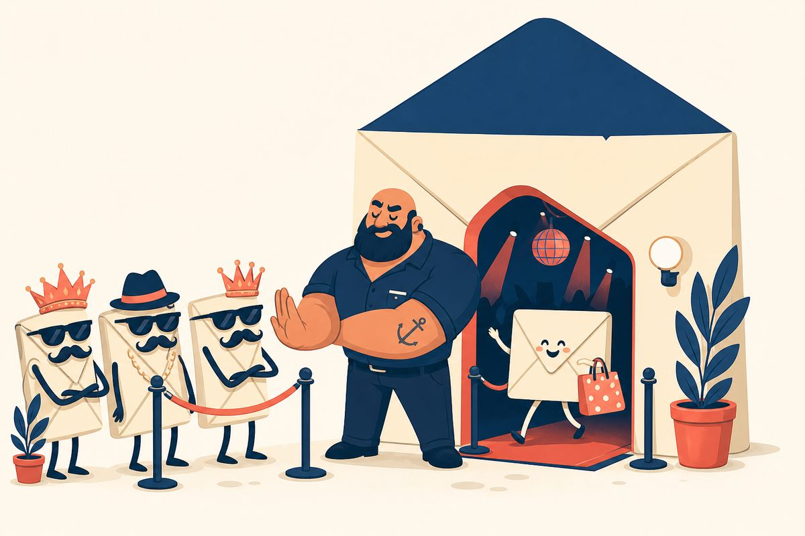
The prince who wants to share his fortune with you never reaches your inbox. Billions of messages a day are turned away at the door.
The three little replies under an email or a chat were not written by you, and somehow they are usually exactly what you were going to say.
Some of the world’s big forecasting centres now run machine-learned forecasts alongside the physics, and they hold their own.
Out of everything your friends posted overnight, a few hundred things were chosen, and ordered, for you alone. Your flatmate sees a different feed.
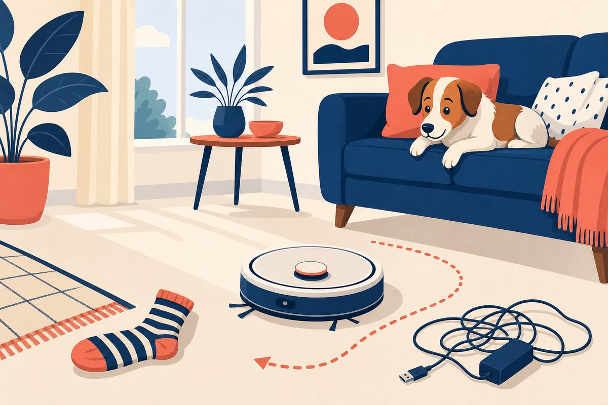
It maps the flat, recognises the charging cable, the sock and the thing the dog left behind, and goes around all three.
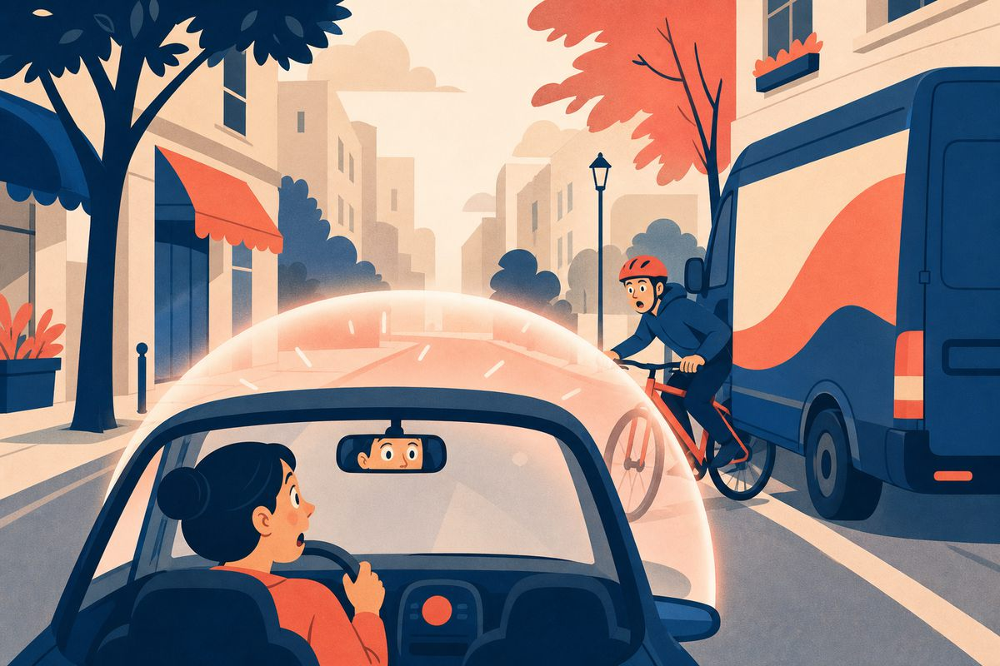
A cyclist appears from behind a parked van and the car stops on its own. Automatic emergency braking is required on every new car sold in the EU.
An arrival time is not a measurement. It is a prediction about traffic that has not happened yet, and it is usually right to the minute.
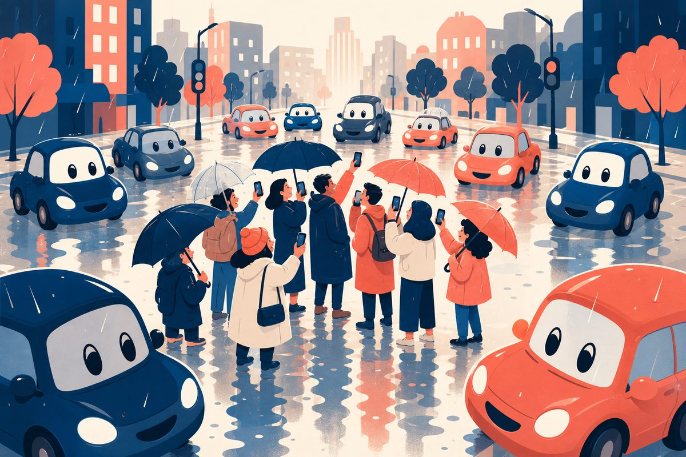
When you open a ride-hailing app, it has already guessed how many people are about to want a car, where, and how much they will pay.
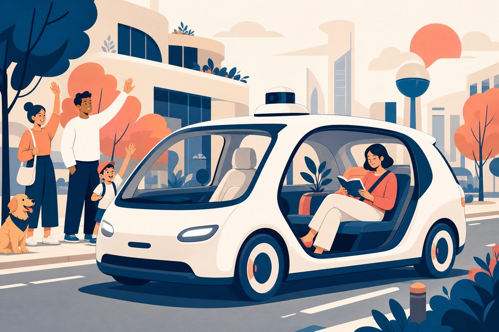
In some cities you can already call a taxi that drives itself, all day, every day, through ordinary traffic.
Once a week a playlist appears of songs you have never heard, by artists you have never heard of, and you like most of them.
Drive into a restricted-traffic zone without a permit and a camera reads your plate, at speed, in the rain — and the fine finds you.
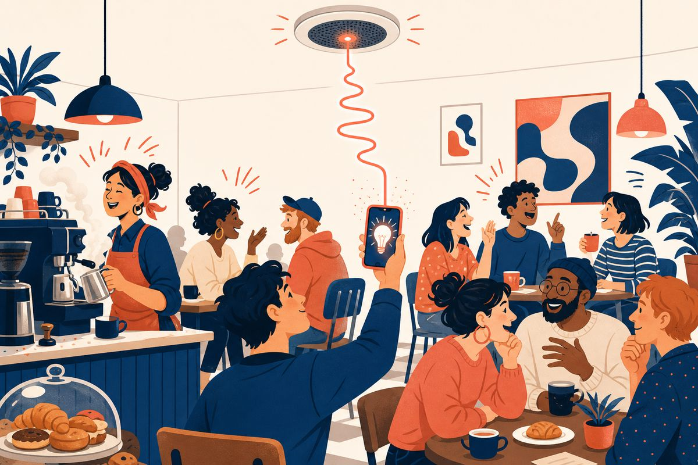
Through café noise and a coffee machine, a few seconds of a song are enough for your phone to tell you exactly which recording it is.
Point your camera at a sign in a language you do not speak, and the words change on the screen into yours, in the same font, on the same wall.
Language apps decide which word to ask you today based on when you are most likely to forget it — and they send the guilt-trip notification at the right moment too.
A sign-in to your account from a new country, on a new device, at an odd hour. The service asks you before it lets the stranger in.
You type four words, misspell one of them, and of all the pages that exist, the one you wanted is in the first three.
The three words above your keyboard are a guess about what you are going to type next — and the guess is trained on how you write.
It fixes the typo you did not notice, and then, with complete confidence, turns your message to your professor into something else entirely.
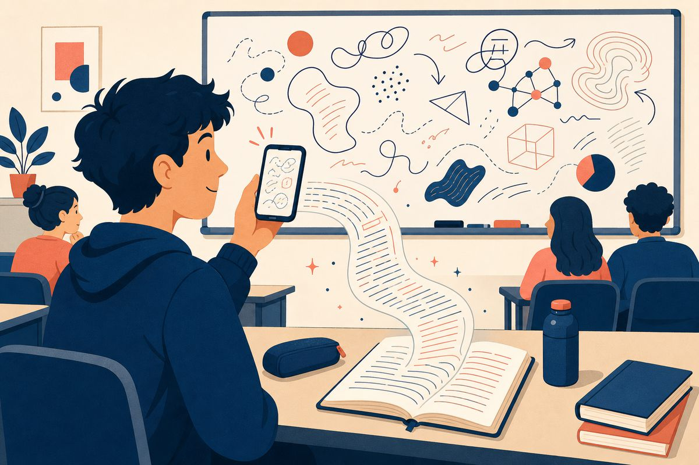
You photograph the whiteboard at the end of the lecture, and later you select the text in the photo and paste it into your notes.
Your voice, with your accent, over a running tap, becomes text, then an intention, then an action. In under a second.
You type the name of a function and the rest of it appears in grey. Most of the time it is right. This course is about the rest of the time.
A chat assistant that drafts your emails, explains a proof, and plans a trip — and sometimes says something false with exactly the same confidence.
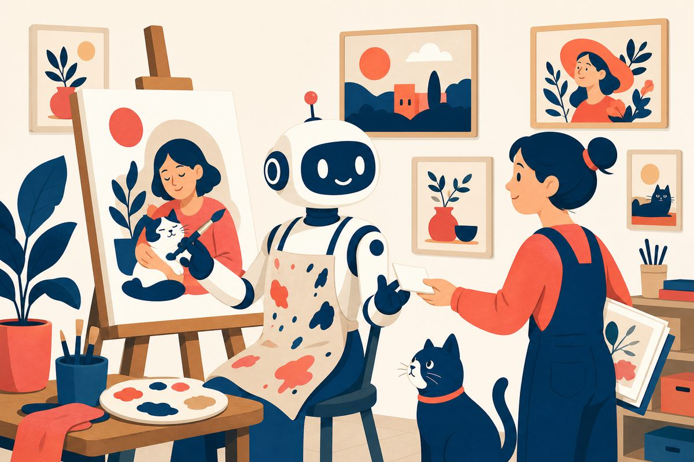
Type a sentence and get a picture. Every illustration in this lecture was made that way, from a one-paragraph description.
Live captions on a video, a lecture, or a call are written as people speak — including, if you are unlucky, a creative interpretation of your surname.
A screen reader comes to a photo nobody captioned and says what is in it: two people smiling on a beach, at sunset.
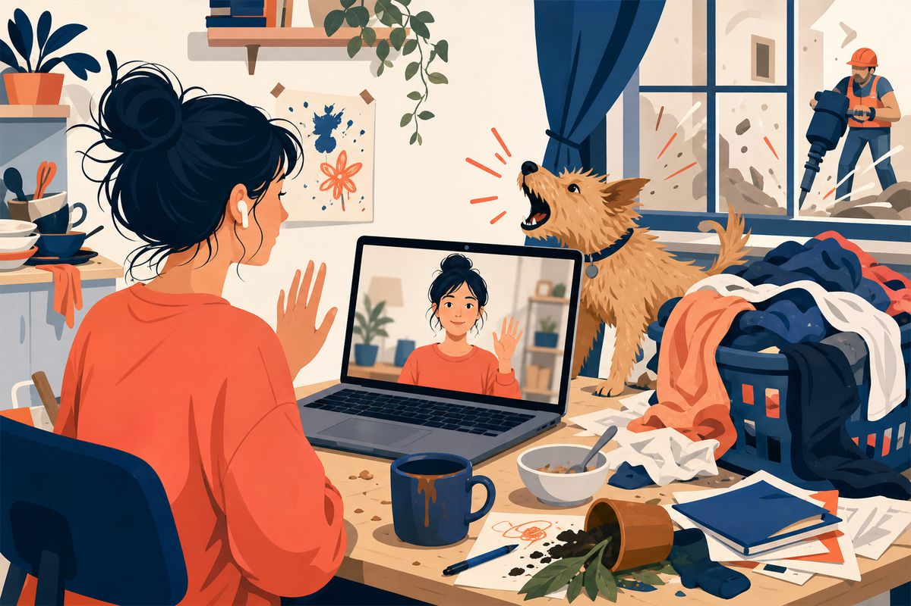
On a video call, the barking dog, the drill next door and your messy bedroom all vanish, and only your voice and your face are left.
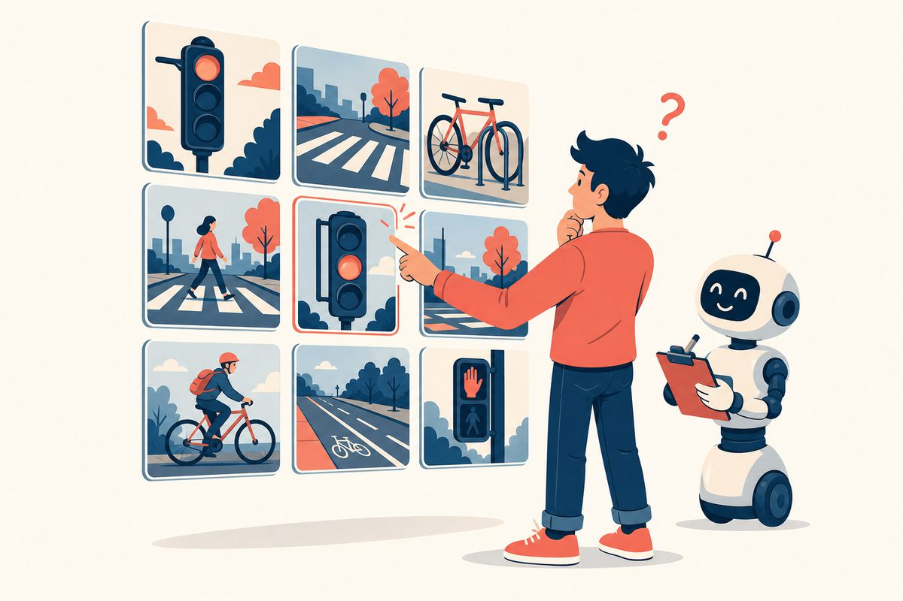
Proving you are not a robot has, at times, also meant labelling pictures for one — the early puzzles helped digitise old books.
You came for a phone charger. You leave with a charger, a cable, a stand, and a lamp you did not know you needed.
The card was used in another country, for an odd amount, at an odd hour, and someone — something — noticed within a second.
Somewhere in a warehouse, a machine that learned to grasp things it had never seen picked up your charger and put it in a box.
You mention running shoes once, and for a week the internet is full of them. Every ad you see was chosen in the instant the page loaded.
For many jobs, before any person sees your application, software has ranked it. The EU’s AI Act counts that as high-risk.
Point your phone at a leaf, a dog, a pair of trainers or a maths problem, and it tells you what it is — or where to buy it.
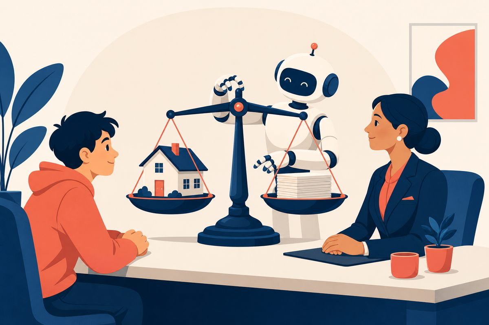
Whether you get the loan, and at what rate, is shaped by a score a model computes from your history. The AI Act calls this high-risk too.
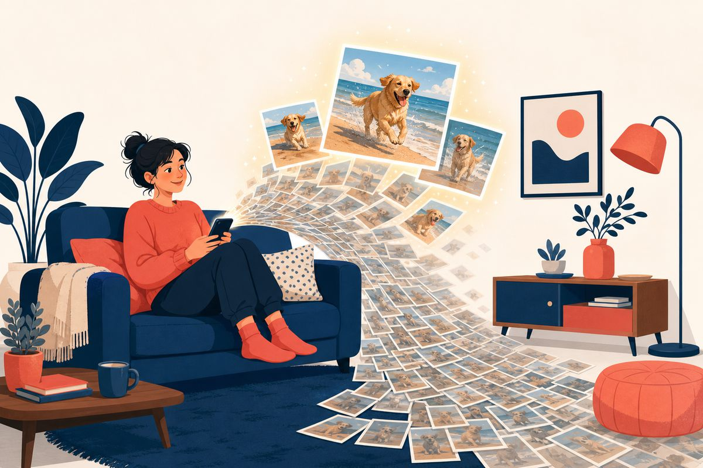
Thousands of photos, none of them labelled, and your gallery finds every dog, every beach, every birthday cake, and every photo of your grandmother.
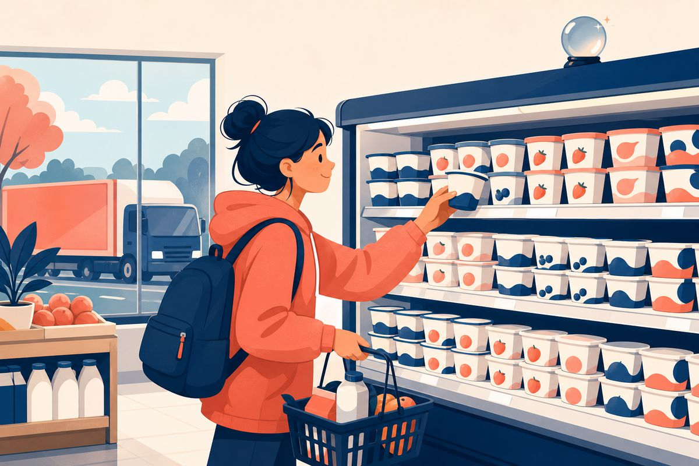
The supermarket ordered it days ago, store by store, because it predicted roughly how many people would buy it on a sunny afternoon.
On an evening run, a smartwatch can flag an irregular heart rhythm, or call for help if you fall and do not get up.
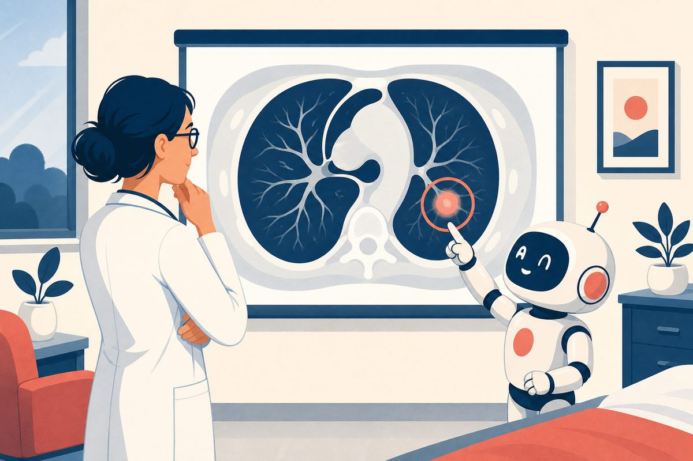
In some hospitals a model now reads screening images alongside the radiologist, and points at the spot worth a second look.
Predicting the shape of a protein from its sequence was a fifty-year-old problem. A neural network largely solved it, and its creators shared the 2024 Nobel Prize in Chemistry.
A phone camera with a lens the size of a lentil takes a sharp, bright picture of a candlelit dinner. Most of that picture was computed, not captured.
The filter finds your eyes, nose and mouth, follows them as you move, and puts puppy ears exactly where they belong, thirty times a second.
Everyone cooks at once. The grid operator predicted the evening peak hour by hour, so the power plants were ready for it.
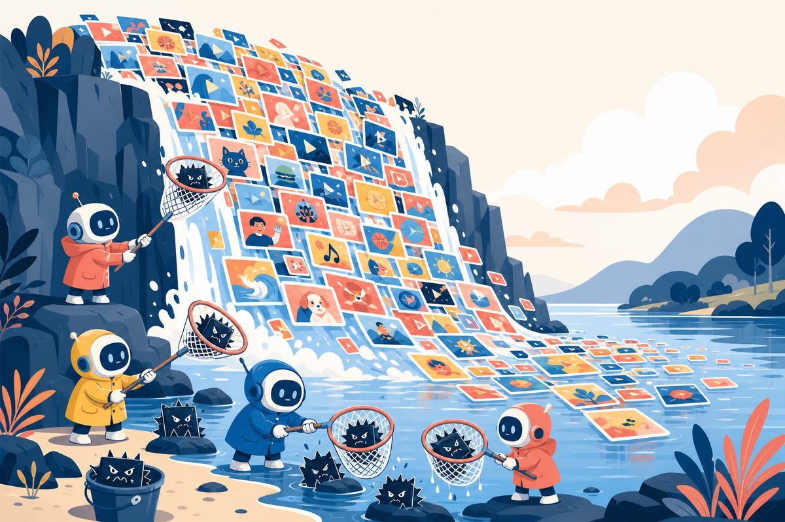
Every minute, hours of video are uploaded to the big platforms. Most of what should never be seen is removed before anyone sees it.
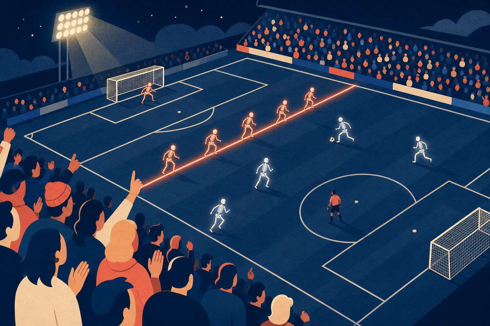
In the big competitions, cameras track a stick-figure skeleton of every player, and the offside line is drawn in seconds.
In many modern games, part of every frame on your screen is not rendered at all. It is invented, and you cannot tell which part.
The profiles you are shown, and the order you see them in, are a recommendation — just one where the items can also say no.
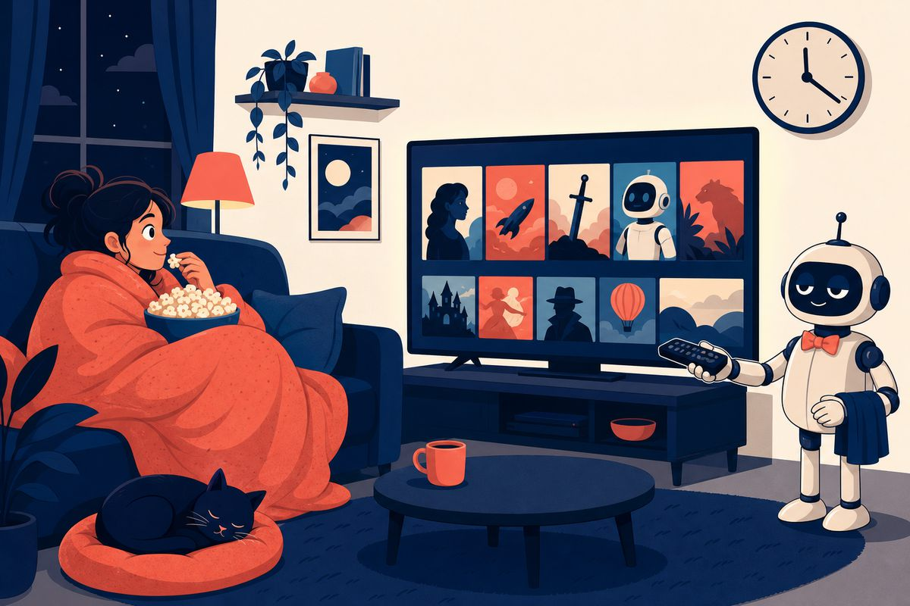
Even the picture on each show was chosen for you. Someone who loves romance and someone who loves action see the same film with different artwork.
Property sites show an estimated price for almost any home, one you are not even selling. That estimate is the model we start building right now.
Part one
You are a data scientist at a real-estate investment company.
Your model predicts a district’s median housing price from the other metrics.
What exactly is the business objective?
Your model’s prediction is fed to another machine learning system, together with other signals, to decide whether a district is worth investing in.
Note the consequence: nobody downstream ever looks at your prediction. A component that quietly degrades inside a chain of components is not noticed by anyone — which is why the evidence has to come from you.
District prices are currently estimated manually by experts: a team gathers information and applies complex rules.
Remember this figure — and read it carefully. It is a relative criterion: 30% of the district’s price. The errors we will measure are in dollars, which is not the same thing, and we come back to this when we measure them.
It is also the stakeholder’s claim about their own team, not a measurement we made. We will treat it as an assumption and label it as one wherever it appears.
Before writing any code, answer four questions:
Pause here and answer them yourself before the next slide.
| Question | Answer | Because |
|---|---|---|
| Supervision | supervised | every district carries its expected output |
| Task | multiple, univariate regression | predict one value, from several features |
| Learning mode | batch, offline | no data stream, and 20,640 rows fit in memory |
Three answers, one minute. The fourth question is the one that can sink the project.
Measured on one run of this lecture’s notebook; hardware, library versions and random seeds can make a re-run differ slightly.
List and verify what everyone is assuming. This catches serious problems early.
We asked. They need the actual prices. We may proceed.
Part two
one look at everything, before anything is split
from pathlib import Path
import pandas as pd
import tarfile
import urllib.request
def load_housing_data():
tarball_path = Path("datasets/housing.tgz")
if not tarball_path.is_file():
Path("datasets").mkdir(parents=True, exist_ok=True)
url = "https://github.com/ageron/data/raw/main/housing.tgz"
urllib.request.urlretrieve(url, tarball_path)
with tarfile.open(tarball_path) as housing_tarball:
housing_tarball.extractall(path="datasets", filter="data")
return pd.read_csv(Path("datasets/housing/housing.csv"))
housing_full = load_housing_data()
Write a function, not a manual download: the data will change, and you will need this on another machine.
One row per district, ten attributes. Start with
head() and info(), always, before anything else.
>>> housing_full.info()
RangeIndex: 20640 entries, 0 to 20639
Data columns (total 10 columns):
# Column Non-Null Count Dtype
--- ------ -------------- -----
0 longitude 20640 non-null float64
1 latitude 20640 non-null float64
2 housing_median_age 20640 non-null float64
3 total_rooms 20640 non-null float64
4 total_bedrooms 20433 non-null float64
5 population 20640 non-null float64
6 households 20640 non-null float64
7 median_income 20640 non-null float64
8 median_house_value 20640 non-null float64
9 ocean_proximity 20640 non-null object
total_bedrooms has 20,433 non-null values, not
20,640.
207 districts are missing this feature.
Measured on one run of this lecture’s notebook; hardware, library versions and random seeds can make a re-run differ slightly.
>>> housing_full["ocean_proximity"].value_counts()
<1H OCEAN 9136
INLAND 6551
NEAR OCEAN 2658
NEAR BAY 2290
ISLAND 5
Repeated values from a small set: this is a categorical attribute, not free text.
Note ISLAND: five districts. Rare categories
will cause trouble later.
housing_full.describe()
count ignores nulls — that is why total_bedrooms
reads 20,433std is the standard deviation: how dispersed the values are25%, 50%, 75% are the quartiles and
the medianFor a bell-shaped distribution the 68–95–99.7 rule applies: about 68% of values fall within $1\sigma$ of the mean, 95% within $2\sigma$, 99.7% within $3\sigma$.
Measured on one run of this lecture’s notebook; hardware, library versions and random seeds can make a re-run differ slightly.
import matplotlib.pyplot as plt
housing_full.hist(bins=50, figsize=(12, 8))
plt.show()
A histogram shows how many instances fall in each value range. Four things should jump out.
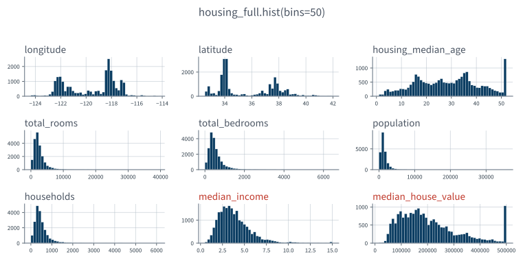
Take thirty seconds. What is wrong with the bottom two?
median_income ranges roughly 0.5 to 15. That is not a salary.
Preprocessed attributes are normal. Understanding how they were computed is not optional.
Measured on one run of this lecture’s notebook; hardware, library versions and random seeds can make a re-run differ slightly.
median_house_value is capped — and it is our
label.
Two honest fixes: collect proper labels for the capped districts, or remove them from both the training and the test set.
Animation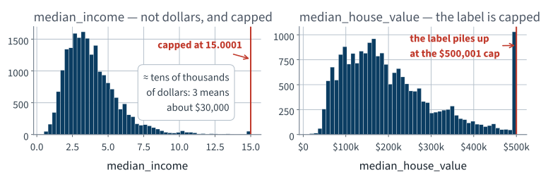
992 districts — 4.8% of the dataset — have a label that is not their price. It is a ceiling.
Measured on one run of this lecture’s notebook; hardware, library versions and random seeds can make a re-run differ slightly.
total_rooms runs from 2 to 39,320.
median_income runs from 0.4999 to 15.0001.
Scaling is required for: gradient descent, regularised linear models (ridge, lasso), SVMs, $k$-nearest neighbours, $k$-means, PCA, neural networks. Anything that measures a distance, penalises a coefficient, or takes a step.
Scaling does nothing for: decision trees, random forests, and ordinary least squares. Trees split on one feature at a time, so any monotone rescaling gives the same tree; least squares is equivariant under an invertible affine map of the features — the fit is identical and the coefficients simply absorb the change.
Linear regression, trees and forests — the models this dataset will be fitted with — are all in the second list. It is also exactly why scaling before the split, a classic leak, will cost nothing here: an invertible affine map, applied to an estimator that does not care. We will measure that rather than assert it.
Measured on one run of this lecture’s notebook; hardware, library versions and random seeds can make a re-run differ slightly.
They extend much further to the right of the median than to the left.
This makes patterns harder for some algorithms to detect. Later we will transform them toward something more symmetric — typically by taking a square root or a logarithm.
A feature following a power law is a good candidate for $\log$: districts of 10,000 people are ten times rarer than districts of 1,000, not exponentially rarer.
Four observations from four histograms, and we have not yet plotted one variable against another. That is exactly the moment to stop.
The only way to know how a model generalises is to try it on cases it has never seen.
Typically 80/20 — but with 10 million instances, holding out 1% is plenty.
info(),
the missing values and the categories, the histograms, the range of
every column, and the cap — counted, not squinted atbins=50
to the default bins=10 in the histogram cell — and look
for the two spikes. One argument, and it decides whether you ever see the
cap.
Measured on one run of this lecture’s notebook; hardware, library versions and random seeds can make a re-run differ slightly.
Not presented — for afterwards
five, in the style of the written paper
info() reports that 207 of the 20,640 districts have no value for total_bedrooms. Give the three legitimate ways of handling the incomplete districts, and say which of them still leaves a decision to make. [4]total_rooms runs from single digits to tens of thousands, median_income from about 0.5 to 15. Name two methods for which this difference in scale matters and two for which it does not, and give the reason for one of the latter. [5]Solutions on Lecture 2’s deck.
Measured on one run of this lecture’s notebook; hardware, library versions and random seeds can make a re-run differ slightly.
Solutions on Lecture 2’s deck.
Lecture 2 · Géron Ch. 2
Data snooping, and a stratified split — measured, not assumed
Exploring the training set: geography, a colour scale, correlations, ratios
Least squares: what fitting a linear model minimises, and why its
stationary point is the minimum
Run the Lecture 1 notebook first